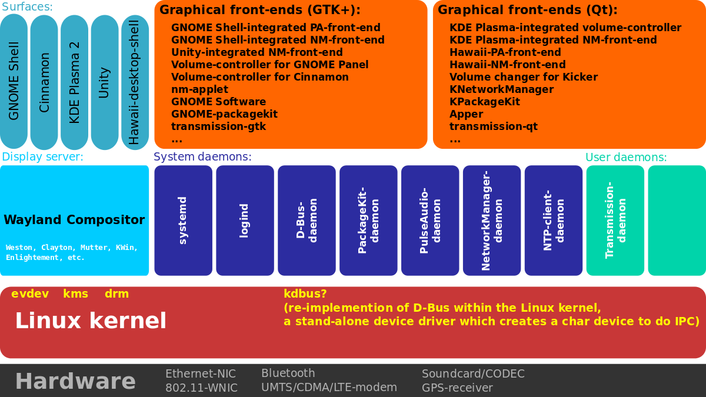

The Programming Club Linux Workshop
Table of Contents
1 Pre Workshop Business
- The Programming Club wants you to sign up for 2022 here
- There will be question breaks during the presentation
2 Why use Linux for a server?
- Linux is Free Software
- Free to modify
- Free to use with no restrictions
- Linux is extremely lightweight
- Linux can run with almost nothing on top of it
2.1 Most importantly…
- Linux has a lot of software support for running web-servers
- Apache
- Nginx
2.2 But what Linux distribution are we going to be using for this workshop?

- There are many different flavors of Linux
- However today we are just going to focus on using Ubuntu 20.04 LTS
3 Why not Windows or Mac OS for a server?
- Windows and Mac OS are owned by parents companies that are restrictive with what you can do with them
- Windows and Mac have a lot of components that might be unnecessary for running just a web server on top

4 One more advantage to running a Linux Web server:
- Linux is very lightweight, which makes it easy to Virtualize

5 Why would we want to Virtualize our Web server?
- Hardware costs a lot of money
- With Virtualization solutions, we can run many separate instances of Linux
- So we can run many web-servers on just one computer
5.1 What Virtualization Solution are we going to be using
- VMware Workstation Pro 16
- Virtual Box
- If you are using Apple M1 Silicon (A new Mac-book): ATM should work
6 Package Manager
- Ubuntu (and other Linux distributions) use what is known as a package manager
- Package Managers make it easy for system administrators to manage the software on their machines
- Ubuntu uses apt as its package manager
7 Installing Nginx
sudo apt install Nginx
- sudo means to run it as the system administrator (or root)
- apt is the program we are calling
- install is the instruction
- Nginx is the software we want to install
8 Setting up Nginx
- First we will check if Nginx is running using
systemctl status Nginx
- if it isn't running we can run
systemctl enable Nginx systemctl start Nginx
- this will enable it to run next time we start the system and run it this time
- Nginx is what we call a daemon
8.1 Daemons
- Daemons are programs that run in the background on our system
- systemctl is part of a larger software suite called systemd
- systemd manages daemons for a system administrator 
8.2 Setting up Nginx (cont.)
- Now that we know that Nginx is running,
- We can ask ubuntu's Uncomplicated Fire Wall (ufw) to let Nginx through
sudo ufw enable sudo ufw allow 'Nginx HTTP'
- We can check if ufw is letting Nginx through
sudo ufw status
- Now if we open up firefox on Ubuntu
- go to our local host at https://127.0.0.1:80, we will see Nginx running
8.3 Publishing our own site
- Now that we have Nginx publishing an example site, we can publish our own
- If you want to use the same site I'm using you can download it from here
- This example site is in what we call a tar.gz format, which we can extract using a linux utlity called tar
- tar is used in a lot of linux systems as as the defacto way to publish many files as one file
tar -xzvf website.tar.gz website
- this command has many parts
8.4 untar
- for the command tar -xzvf website there are three main parts
- x means we want to untar (unzip) the file
- z means we want to decompress it
- v means we want tar to be verbose (tell us exactly what is going on)
- f means we want to specify an output directory
8.5 putting the website on Nginx
- Nginx keeps all web content in a directory called var/www
- the var director is meant specifically to contain files that are unique to this linux instance
- www is for web related content
- Because of this we can easily publish our site by copying all the files in website to var/www
sudo mv website /var/www/
- In this command we are asking the system to move (mv) the directory website to var/www